Reading: Chapter 10, 11, Earth's atmosphere (NASA), UN climate report 2026 (executive summary here), UK government report
- Top Hat Q1, Q2
Planetary atmosphere is a complex topic that combines multi-physics, chemistry, chaotic dynamics (deterministic chaos was originally discovered in this context!), and of extreme social relevance today – it would deserve its own multi-semester course, and we will only be able to scratch the surface today. I encourage you to take this as a starting point and explore references above from non-political scientific advisory boards of various national and international institutions.
Following the spirit of last lecture, we will focus today on the physical processes that shape the atmosphere of planets. Once again, the physics is the same everywhere, but the specific conditions (composition, distance to the star, etc.) of each body in the Solar system - and in exoplanetary systems! - determine the variety of atmospheric conditions we can find.
And also in analogy with planetary geology, comparative planetary atmosphere studies can teach us about our own atmosphere, and the massive damage that ∼ 200 years of industrial extraction of fossil fuels is doing to it. So while it may seem wasteful to study the atmospheres of other planets, it's actually one of the best possible ways to understand the physics of the complex and chaotic atmosphere on Earth, which we cannot replicate at scale in a lab.
Atmosphere vs. envelope
- Atmosphere: partially transparent to some light (photons coming from this layer have at most one interaction with the gas before free-streaming outwards). The definition of atmosphere is thus related to light-matter interactions.
- Envelope: we have discussed planet formation as a bottom-up process mediated by disks, where a solid core is formed first, and then accretes gravitationally attracted mass. One can think of everything outside the core as an envelope, which however can be solid (e.g., Earth's mantle) and this statement doesn't say anything about its radiative properties (no transparency requirement)
The Earth
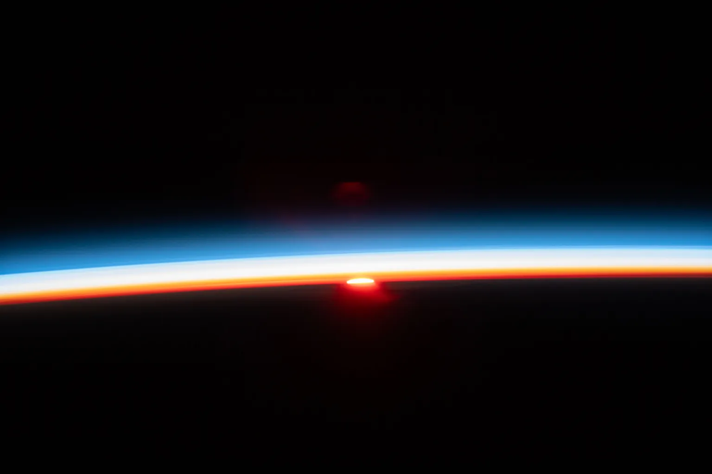
The Earth's atmosphere is a thin layer of gas, cold enough to be in the form of molecules:
- Nitrogen N2 makes the majority of it
- Oxygen in the form of O2 molecules is ∼ 16%
- Other molecules, such as CO2, H2O, CO, CH4
The gas is held by the planet's gravity and has a roughly exponentially decaying density: there is no sharp boundary, although above about \(100\,\mathrm{km}\) the density becomes so low that collisions between molecules are rare. This is conventionally defined as the boundary between the atmosphere and space. Compared to the radius of \(\sim 6000\,\mathrm{km}\) of the planet, the atmosphere is a very thin layer.
It is transparent to what is by definition the visible range of the electromagnetic spectrum, but blocks large portions of the high-energy photons produced by the Sun.
Throughout the ∼ 4.5 billion-year-long history of the planet, the composition of the atmosphere has evolved: early bombardments by comets depositing large amounts of H2O, long periods of volcanic eruptions releasing CO2 and other gases trapped in the interior, biological processes (cyanobacteria releasing molecular O2), etc. The modifications these processes introduced in the chemical composition of the atmosphere, and consequently the physical processes that determine the status of the atmosphere. We have multiple geological and fossil evidence (including "carrots" from the ice caps at the poles, which literally froze in time conditions) for these changes, and we can also determine the timescale over which these occurred. Together with the process of surface erosion, this is shows that the atmosphere of a planet is connected to its interior.
Other planets
The figure below compares the density and thickness of the atmospheres of various solar system bodies. To make the comparison possible, the "thickness" is scaled by the "pressure scale height" \(H\):
which represents the height \(z\) at which the pressure drops by a factor of \(e\simeq2.71\) .
Small bodies (but big enough to be self-gravitating) have a weaker gravity: it makes it easier for an atmosphere to escape it. Atmospheres can, over time evaporate! For this reason, for example, the Moon and Mercury do not have atmospheres (missing in the plot above!). Even on Mars the atmosphere is significantly smaller than on Earth, with a surface (\(z/H\simeq0\)) about 100 times less dense than on Earth. This, regardless of composition, is unsuitable to sustain human life.
N.B.: the density on the x axis is on a logarithmic scale!
Venus has the thickest envelope. Is is made mostly of "greenhouse gases" that trap infrared radiation: the radiative energy provided by the Sun cannot escape and the planet heats up.
Thanks to robotic in-situ probes, artificial satellite plunge-ins, and observations across the electromagnetic spectrum, we can also compare the temperature structure of planets:
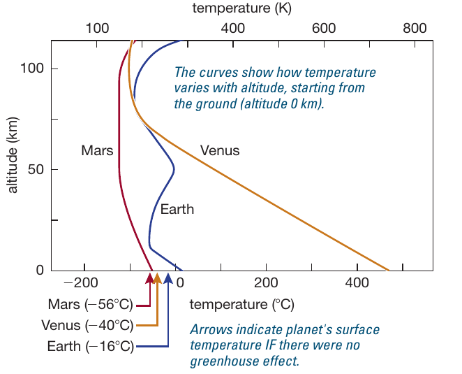
The arrows at the bottom point to the temperature there would be in absence of an atmosphere which, because of greenhouse gases acts as a blanket. For Mars, very thin atmosphere, the difference is small, but Earth, and especially Venus are significantly hot than they would.
Before discussing in detail greenhouse effect, let's continue an overview of planetary atmospheres going outside the solar system.
Exoplanets
We have already mentioned transmission spectroscopy as a way study exoplanet atmospheres! For a planet orbiting a star other than the Sun, we are not able to resolve them, meaning their size is smaller than how a telescope spreads a point source. But by looking at the spectrum, we can infer not only the chemical composition (e.g., presence of molecules of water or oxygen!), but also the presence of clouds and learn about exo-climates!
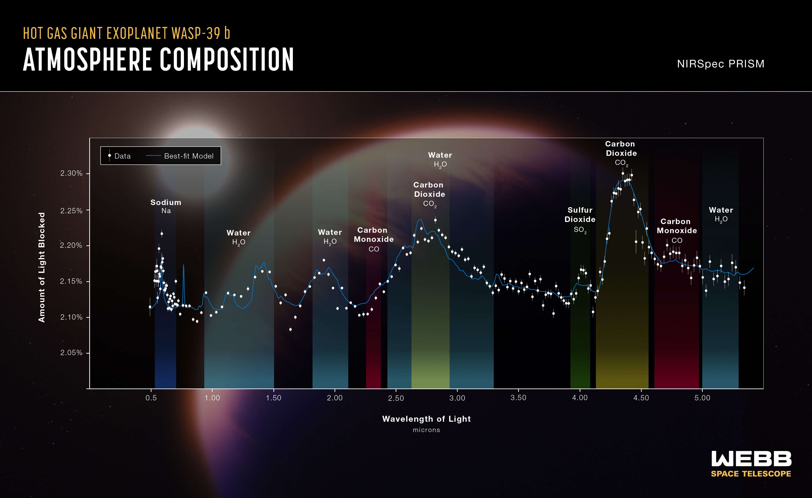
Atmospheric structure
Stratification
Although evolving on geological and planetary timescales, the atmosphere is globally stable: it is in hydrostatic equilibrium. The weight of the gas on top of a column compresses the gas below, and gravity from the underlying body holds it in place. The change in pressure of the gas balances gravity out so the net force is zero and there is a static equilibrium. Per unit volume we have:
The balance between gravity and the pressure gradient sets the zeroth order structure of the atmosphere.
N.B.: Eq. \ref{eq:pscale} is an approximate solution for the hydrostatic equilibrium structure.
Pressure
The pressure \(P\) is the force (that is change in momentum by Newton's second law) per unit area caused by the momentum exchange between the molecules of the atmosphere colliding. The thermal velocity of these molecules is of 100s of m/s at room temperature, each molecule moving in a random direction and bumping into everything! Because the direction of the thermal motion of the molecules is random and equally likely in every direction, pressure is isotropic, meaning that it is the same in every direction.
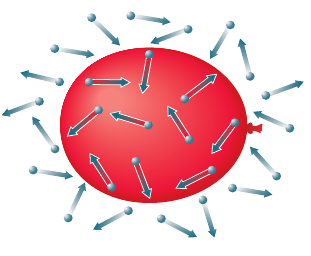
You don't feel any pressure from the atmosphere because the stuff your body is made of pushes outward with an equal pressure, and because there is no direction for pressure: it applies the same amount in every direction! But you can feel pressure changes, for example on take off and landing of a flight.
Pressure is naturally related to temperature (which is what causes the velocity of the molecules in the first place), but also density! For instance you can feel as you exhale that the air is expanding and cooling, which lowers its pressure as it exits your lungs. This is called adiabatic expansion and cooling where "adiabatic" means that there is no exchange of heat between the flow and the environment, and the cooling comes just from the expansion.
Depending on the relationship between thermodynamical quantities (pressure \(P\), temperature \(T\), density \(\rho\)), so-called equation of state (EOS), which in turn depends on the chemical composition, and parameters such as humidity, we can solve for the structure of the atmosphere of a planet.
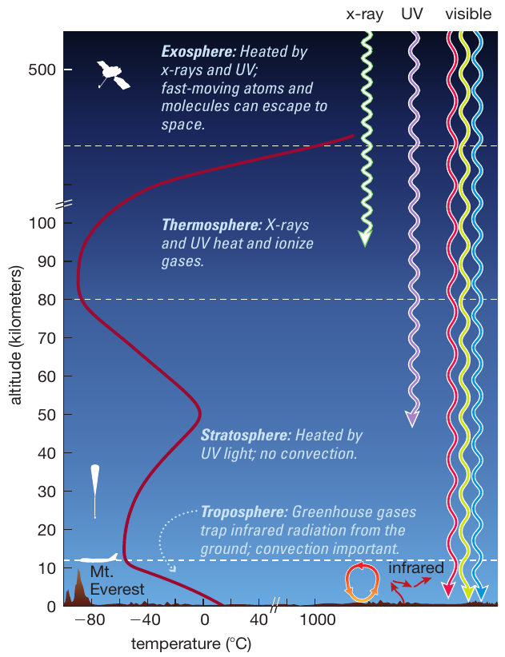
- The troposphere is the lowest layer, in which temperature drops with altitude (something you’ve probably noticed if you’ve ever climbed a mountain).
- The stratosphere begins where the temperature stops dropping and instead begins to rise with altitude. High in the stratosphere, the temperature falls again.
- The thermosphere begins where the temperature again starts to rise at high altitude.
- The exosphere is the uppermost region, in which the atmosphere gradually fades away into space.
Rotation
Adds a force (the centrifugal force) to the hydrostatic balance, which corresponds to another term in Eq. \ref{eq:HSE}. On the rotation axis one feels no centrifugal force, it only depends on the distance from the rotation axis \(r=R\sin(\theta)\), and it is maximum at the equator. N.B.: This affect also the solid part of a planet if any!
This causes planets to deviate from a perfect sphere, and be "bloated" at the equator! This is particularly relevant for the gas giants that rotate very fast for their size.
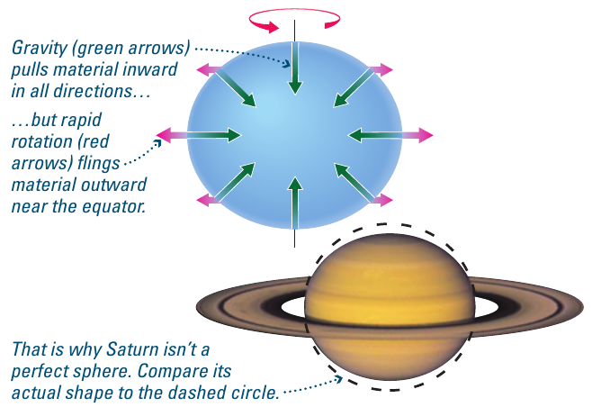
Energy balance
Atmospheres filter the radiation from the host star, protecting the planets from some of the high energy photons, and trapping some photons allowing to store some energy in the form of thermal energy. Together with magnetospheres protecting from the stellar wind (stream of protons investing the planet), atmospheres thus act as a shield for the planet, but also a blanket.
An atmosphere of a rotating and orbiting planet is constantly being forced on the day side by the irradiation of the star providing energy. This means that an atmosphere, like any other system, will try to balance out the energy input on one side, and reach some equilibrium, but the constant and asymmetric driving constantly perturbs them. Atmospheres of planetary systems are dynamic systems!
The constant injection of energy has to be balanced out by the thermal radiation losses of the planet. Recall that the thermal radiation (black body) only depends on the temperature \(T\). In a stably stratified atmosphere, the temperature structure as a function of height \(T(z)\) will depend on how easily energy can flow through each layer.
The processes to transport energy in the interior of a planet and in its atmosphere are the same: radiative energy transport by photons, conduction by electrons, and convection by bulk motion of matter if the first two are insufficient. In an atmosphere (by definition transparent to some radiation), the densities are typically low (\(\lesssim 1\,\mathrm{kg\ m^{3}}\)) and conduction by electrons is not very efficient: radiation and convection are typically more important.
N.B.: In fact we have already seen an atmospheric example of convection in cumulonimbus clouds!
The fact that the energy input and output of a planet need to match, together with the processes that determine the energy losses of the planet, determine its temperature structure. At any \(T\neq0\), particles (in this case molecules of the atmosphere) have a certain distribution of random velocities with average value determined by \(T\), and some will be fast enough to escape the gravity of the body! Smaller (in mass) bodies like Mercury or the Moon have weaker gravity and have completely lost their atmospheres.
Greenhouse effect
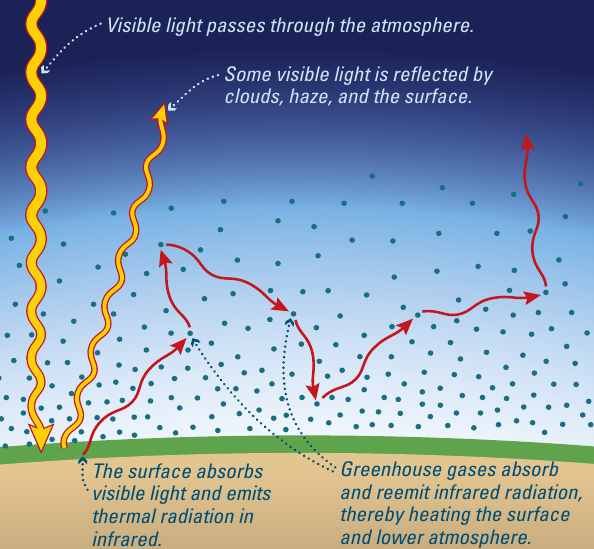
Energy conservation in a planet requires that at equilibrium, what goes in must come out!
In this context, what goes in is energy (in the form of radiation) from the host star, part of which is reflected by the planet - this is how we see other planets in the solar system! - and part is absorbed. The fraction of reflected energy depends on the radiative properties of the surface: for example ice is very reflective.
The planet's temperature doesn't increase steadily over time: the energy is re-emitted with the thermal spectrum of the planet, which typically peaks in IR (as opposed to the hotter Sun peaking in the visible range). Over the 4.5 billion years of evolution of these planets, an equilibrium has been reached in most cases.
The re-emission of this energy occurs through radiative processes: the composition of what is emitting (i.e. the planet) matters! In particular, planets such as Venus rich in so-called "greenhouse gasses" have many molecules that contain a very large number of electronic transitions corresponding to the energy of IR photons. This makes it hard for photons of the thermal radiation to leave the planet: instead of leaving, they keep on bumping into electrons of these molecules and giving them their energy. The molecules will also de-excite through emission of IR photons, but this process is random in direction: an outward moving photon will on average be sent backwards many times before making it out. The energy is effectively trapped, and the temperature of the planet increases compared to if it did not have a blanket of green-house gas molecules.
N.B.: This is a misnomer: greenhouses trap heat not by radiative processes, but preventing hot air from rising and cooling as it expands (greenhouses confine the volume of the gas and prevent adiabatic cooling).
The Greenhouse effect is not bad: without greenhouse gases on Earth, it would be too cold for liquid water (cf. Fig. 2 above)! The temperature and composition structure \(T(z)\) reached by the planet is exactly right to achieve a balance between the energy inputs and outputs with the specific composition.
The current problem with global warming is that human industrial activities are increasing the number of greenhouse gases in the atmosphere. This shifts the natural balance point to a hotter atmosphere for thermal radiation (more trapped than before industrialization) to balance out the (on average unchanged) solar input. This make the Earth's chemical composition of the atmosphere harder to cool down and literally traps thermal energy on the planet. This NASA animation shows the global warming of the atmosphere from 1884 to 2022.
Another complication is the high non-linearity of the atmosphere: it is not just the sum of its parts, but instead combining physical processes can have hard to predict cascade effects. For example:
- global warming → melting of ice caps → reduction of the reflectivity of Earth → more energy from the Sun is captured and stored by the Earth → worsening of global warming.
- global warming → ocean temperature increase → reduced capacity of the ocean to store CO2
N.B.: There is no ambiguity in the scientific community about the occurrence of global warming. There is also no ambiguity and overwhelming consensus that industrialization of human activities and consequent release of large amounts of greenhouse gases previously stored inside the rocky portion of Earth are the driving cause. This does not exclude minor contributions other than human activities (such as solar activity, volcanic eruptions, etc.) that we do not control. But the major source of greenhouse gases that has changed in a centuries timescale (compared to geological timescales) is undoubtedly industrial anthropic activity, and it is also the one we can collectively control.
Greenhouse gas molecules
The most important ones are CO2 and methane CH4. These are relatively heavy and trap the heat at low altitude (troposphere). The high opacity of CO2 to IR radiation was first recognized by Eunice Newton Foote in the 19th century, The high opacity of CO2 to IR radiation was first recognized by Eunice Newton Foote in the 19th century, and independently rediscovered shortly after.
N.B.: Science is a collective enterprise, and in the community of active researchers ideas tend to appear in multiple places at almost the same time very often (even for extremely revolutionary ideas such as Einstein's relativity or Newtonian dynamics) .
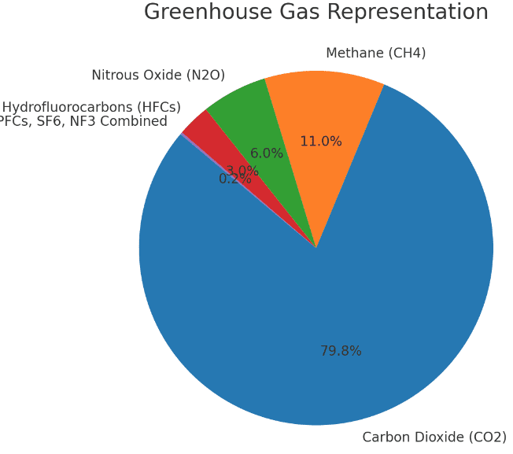
The problem with antropo-caused global warming is that in the past ∼ 150 years we have collectively burned coal and gas: burning by definition is a chemical reaction that releases heat and CO2 which is a molecule with many infra-red bands that trap infrared radiation.
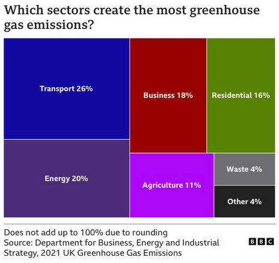
While replicating at scale the atmosphere is not possible, we can study the individual processes at play, e.g., opacity of a specific molecule, in a lab, and compare to other planets (e.g., Venus) to understand the impact of the microphysics on a global/planetary scale.
Radiative properties
- Top Hat Q3
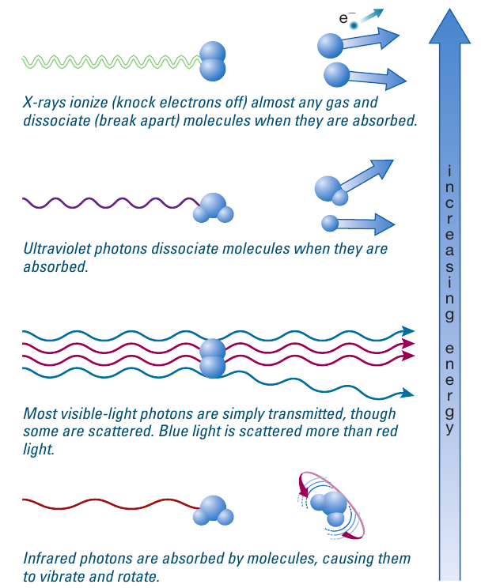
We have already discussed radiative properties for the greenhouse effect: it is all based on the opacity of certain molecules to infra-red radiation.
- Top Hat Q2: why is the sky blue?
In the visible range, the dominant source of light-matter interactions is Rayleigh scattering, where molecules interact preferentially with higher frequency photons. During the day, the Sun produces plenty of photons of every wavelength following its black body emission at \(T\simeq5800\,\mathrm{K}\), but the bluer (higher frequency) photons can scattered around, creating the blue haze of any significant mass of air (in any direction, think distant mountains).
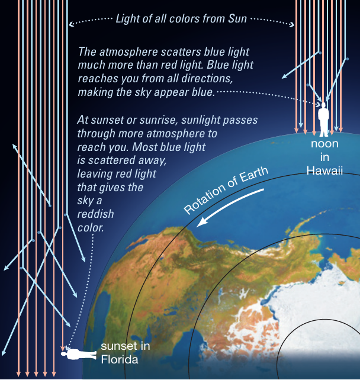
At sunrise or dusk, there is more air for sunlight to get through and the blue frequencies are completely scattered away, becoming too faint to see, and leaving the red portion visible.
On different planets, with different compositions (and around stars of a different temperature), the radiative processes dominant and determining the baseline color of the atmosphere may change!
Weather and Climate
The injection of energy on one side of the planet causes constant "churn" to transport and redistribute the energy: on a local scale (in space and time) this causes the weather. Increasing the scale spatially and averaging over longer timescale we have the climate.
The interplay between atmospheric and geophysics, the role of the external forcing by stellar light, and the high non-linearity of the system make both hard to predict – and comparing with observations outside of Earth provides valuable constraints to understand these phenomena we cannot replicate at scale.
Bands
If you think of say Jupiter, you probably immediately picture a planet with "bands".
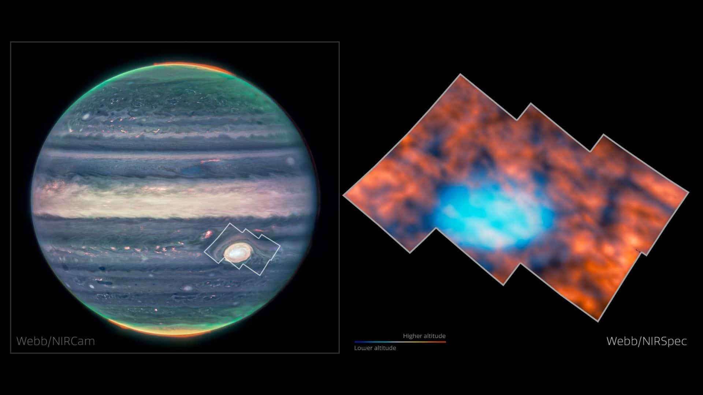
Those are not unique to Jupiter, but appear on all fast-rotating planets, gas-giants (e.g., Saturn, Neptune, Uranus), and rocky planets too!
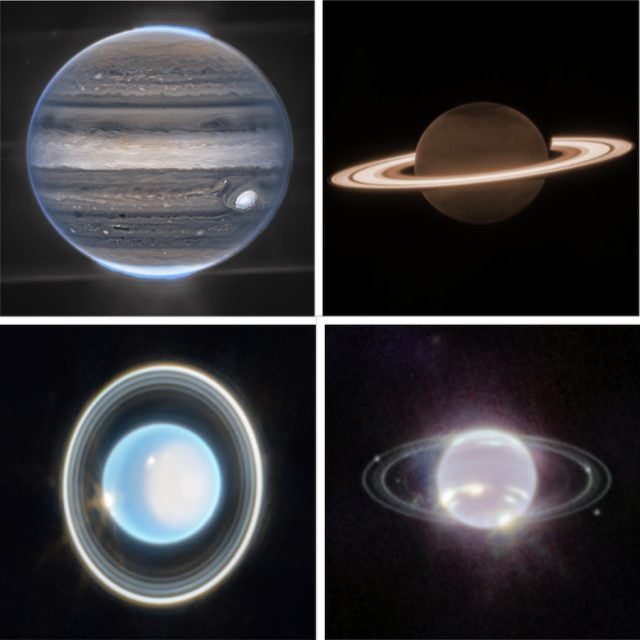
Those bands track the typical wind direction: even Earth has these bands! The jet stream current, which seeds (together with flows from the Gulf of Mexico) tornados in Tornado alley, and makes your eastward flights faster than the westward flights is an example!
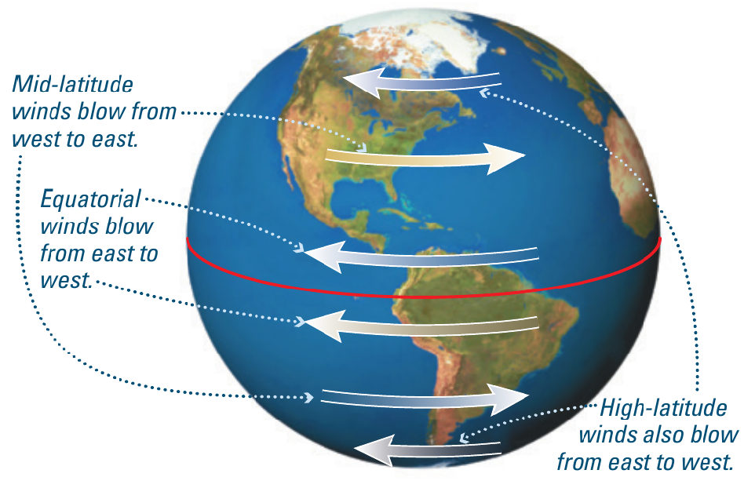
The depth at which bands appear depends on the temperature structure and composition of the planets: even if not visible in the optical/IR, the latitudinal flow exists on fast rotating planets, driven primarily by the Solar input of energy on the day side and attempt of the planets to redistribute it.
How do these bands form? At the equator, where the Sun light impacts the planet at a smaller angle, thus deposit energy more efficiently, hot air raises, while at the poles (where the incidence angle of Sunlight is maximum), cold air sinks. This produces two circulations as in the figure below:
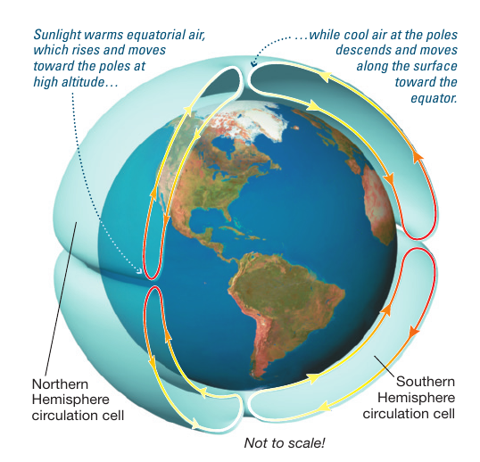
(Fast) rotation of the planet then twists these circulations through the Coriolis force \(\propto \omega \times v\), causing winds in the latitudinal directions.
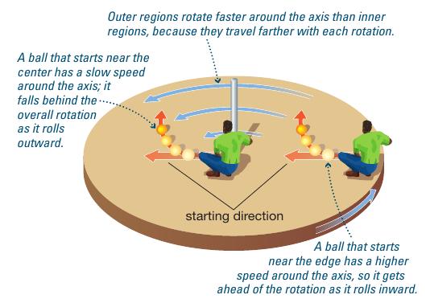
Hurricanes
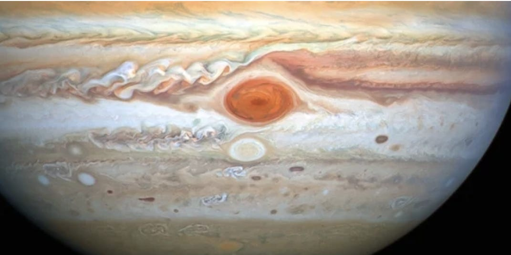
N.B.: The size of Jupiter's giant eye storm is several times the size of the planet Earth!
Wet and powerful storm propagating maintaining their structure because of conservation of angular momentum (it's a rotating system of air that cannot fall much like a bike going does not fall!)
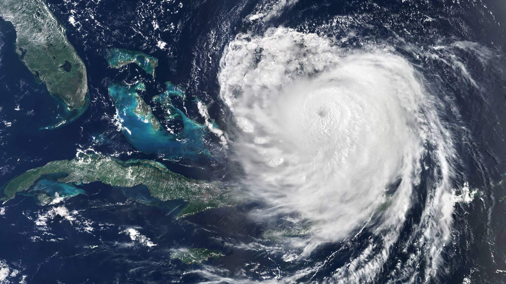
Hurricanes are so large that their propagation is influenced by the Coriolis force, which is a force felt by a moving object in a rotating reference frame (think walking around on a merry-go-around!): this is why storms have opposite rotation in the northern and southern hemisphere.
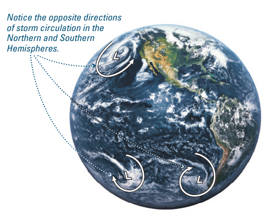
N.B.: The Coriolis force is at the center of a famously wrong Simpsons episode: for it to matter, the scale of the flow needs to be a significant fraction of the Earth's radius! Only then the difference in \(R\sin(\theta)\) between parts of the storm will be large enough for this force to matter: in a toilet bowl, the flow is determined by the shape of the bowl, and the difference in Coriolis between sides of the flow is completely negligible.
Stable vortexes
As the Red spot storm on Jupiter demonstrates, some structures in a planetary atmosphere can be persistent and stable for long periods of time. The cause it typically conservation of angular momentum which stabilizes these flows (much like it stabilizes a bike moving).
This, especially next to the poles, can lead to long-lived vortex structures:
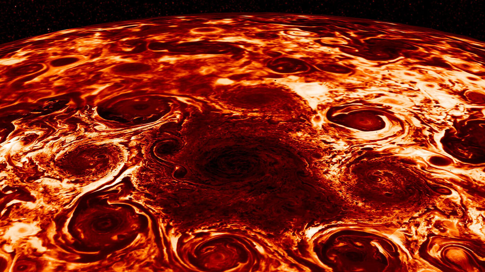
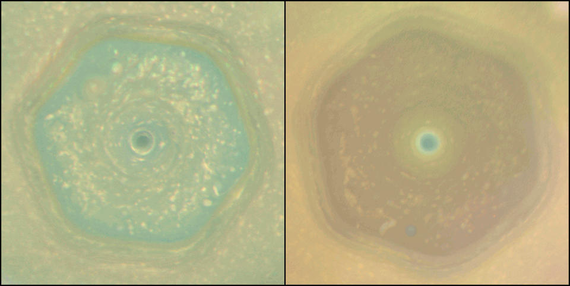
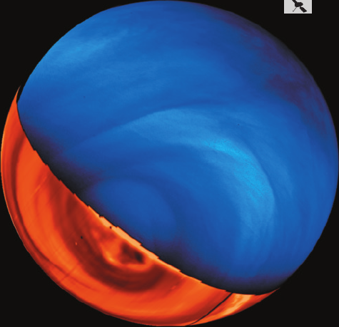
On Earth too there are these polar structures, for example the hole in the Ozone layer is roughly confined to the southern hemisphere by structures similar to the polar vortexes in Saturn and Jupiter.
windy is a free online website or app to visualize global atmospheric models of the Earth, the link points to the South pole and you can see the predicted wind flow by various models (by default the GFS model run by the UN National weather service).
N.B.: The hole in the Ozone layer (which allows more UV radiation to come through, since Ozone, or O3 is a molecule blocking the UV, and thus leads to higher skin cancer rates in the southern hemisphere) is an example of how coordinated human action on a global scale can impact and mitigate the damage made by human activities. The hole was caused by emission of specific molecules/aerosols by human activities, banned in the late 80s, and we see since then the Ozone hole has decreased in size! The video below shows NASA data (blue = less ozone) from 1979 to 2007: you can clearly see that the hole is confined roughly over Antartica, and possibly shrinking in size post-1980s
Cycles
There aren't many nuclear reactions occurring on planets: some radioactive decays, some human reactors and bombs, and occasionally some lightning can cause small nuclear reactions too. This means overall the nuclei available, typically stored in atoms and molecules at planetary surface temperatures are reused, and reassembled, and cycled in various molecular forms without being created or destroyed. An analogy maybe some of you know: the Nitrogen cycle in an aquarium.
The combination of geological, biological, and atmospheric processes creates cycles that particular chemical elements (whose properties are determined by the electronic bonds across the nuclei in their molecules) are constantly drifting.
Most over billions of years have reached some form of stable equilibrium, but can be destabilized by exceptional events (collision with minor body, development of an industrial species, etc…)
Water cycle
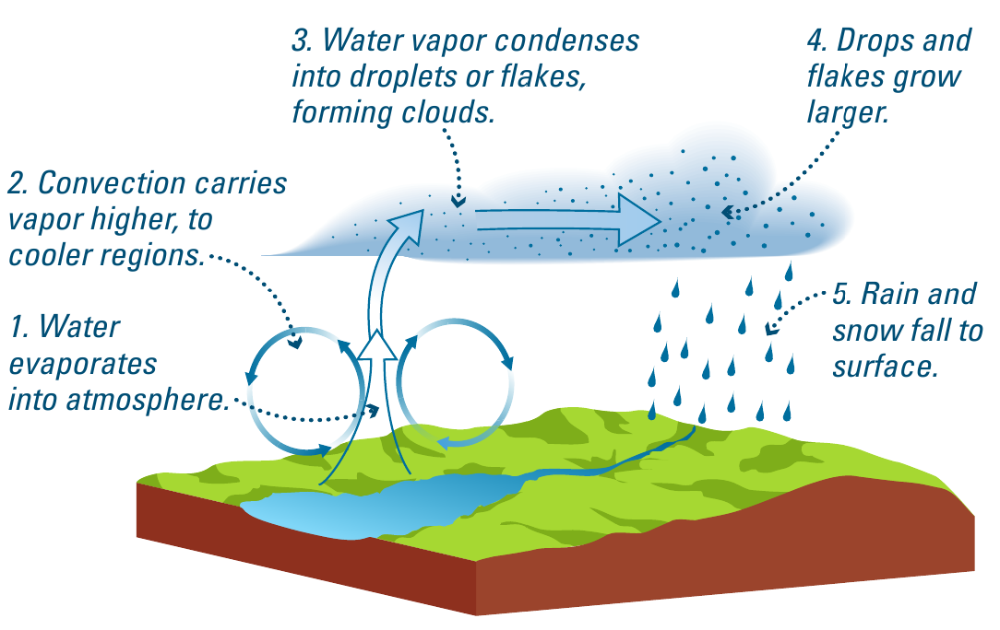
Carbon cycle
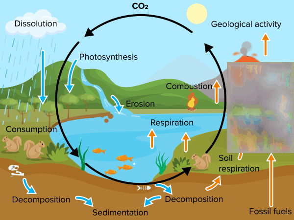
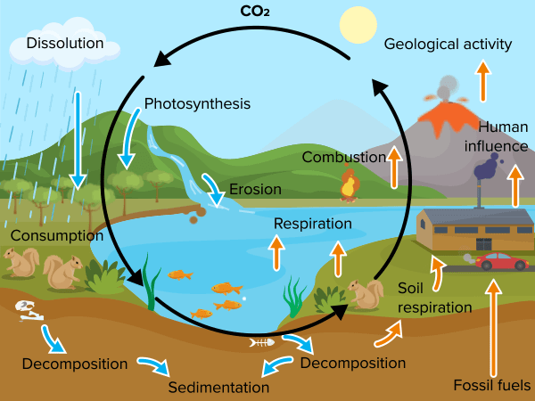
Because of the role of CO2 as a greenhouse gas, the addition in the past ∼200 years of human influence (through industry, transport, industrial agriculture) is forcing the CO2 cycle to a new equilibrium point:
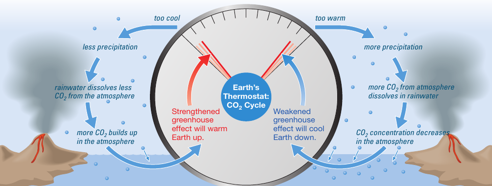